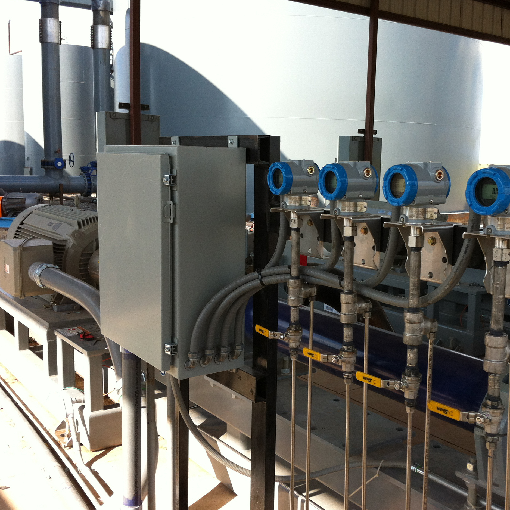

Custom Automation
No matter what your production operation consists of, we have the ability to monitor, control and alarm it. You have access to your facilities via the web, to view reports and or make changes locally or online. Our simple to use dashboard was made to give you easy access to your production values.

Field Service
Our field service personnel are highly experienced and professional. Enabled to design and build systems that fit the exact needs of each customer. Fabricated and programmed in house gives us an understanding of all options available to you. Trained to look for and offer additional services that you may need from PLOW.

Reliable Partners
To provide you with what ever you dream up to improve your business, the team employed at PLOW are skilled field technicians, programmers, IT personal, and custom fabricators. We adapt around you, not the other way around.Too few industries run 9-5 so Plow is available 24 hours a day, 7 days a week, 365 days a year for or customer.
Plow Technologies offers affordable control and monitoring systems to match any site size. With our customizable services, we give you the ability to make critical changes and access important data from anywhere, at any time.
OnPing allows remote access to any location, giving you real time data when you need it.
With the push of a button, know your tank level, run status, pressure, or flow rate at remote locations.
We offer cascading alarms, smart shutdowns, call-outs to field personnel, and complete storage of all
collected data for the well. We maintain and support every aspect of the OnPing system.
There is no added load to your IT department.
Our knowledgeable personnel will work with you to design a control and monitoring system to fit your needs. Don't spend money on equipment that you won't need or use. Our experienced team will build effective and efficient units, saving you time and money.
$for(packages)$
Test
$endfor$

Pay for what you use
Plow automation packages include only equipment that you will use, but still allow for upgrades to our designs. Our work is also made to last, even in harsh weather.
As many configurations as you need
Automation exists to simplify your life. Plow programmers are skilled in tooling a program to your specification and with experience to make the changes you need as your company grows.

Easy to install
Plow field techs are trained on installation of all our equipment. Our standard of quality will ensure that our packages are working to your expectation once installed.

More control over your well
Access your data from your phone, tablet, or computer anytime, make decisions, and make changes from the same device. Receive alarm calls anytime a problem requires your attention.